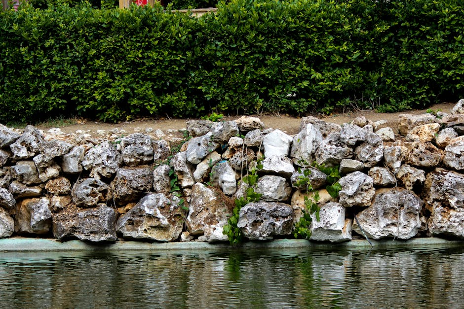

الدليل الشامل لإنشاء وتصميم خلفيات متحركة احترافية لمواقع الويب والتطبيقات
اكتشف المزيدتُعد جدران الاستناد من أهم العناصر الأساسية في مجال الهندسة المدنية، حيث تُستخدم بشكل واسع في مختلف المشاريع العمرانية، خاصة في المناطق التي تعرف تفاوتًا في مستويات التربة أو وجود منحدرات حادة. وتكمن أهمية هذه المنشآت في قدرتها على دعم التربة ومنعها من الانهيار أو الانزلاق، مما يساهم في حماية الطرق والمباني والمنشآت المختلفة من الأخطار الطبيعية التي قد تنتج عن عدم استقرار الأرض.
ويُعرف جدار الاستناد على أنه منشأ هندسي يُبنى خصيصًا لمقاومة الضغط الجانبي للتربة، حيث يعمل على تثبيت الكتل الترابية ومنع حركتها نحو الأسفل، خاصة في المناطق المرتفعة أو المنحدرة. ويُعتبر هذا النوع من الجدران حلًا فعالًا لمشكل انجراف التربة، كما يسمح باستغلال الأراضي بشكل أفضل، خصوصًا في المشاريع التي تتطلب تسوية الأرض أو إنشاء طرق في المناطق الجبلية.
